MODIFICATION OF db2fedsvrcfg TOOL¶
Date: February 03, 2016
This doc intends to work as a record of how “db2fedsvrcfg” tool is being modified in order to adjust tool to meet “Add DB2 Federation Server capacity to NoSQL data source” project needs.
0. Code Change summary¶
build info:
The branch name got is: temp_iidev20_bigsql_main_hzy /vbs/engn/sqqg_odbc/db2fedsvrcfg/db2fedsvrcfg.C@@/main/temp_iidev20_bigsql_main_hzy/1 /vbs/engn/sqqg_odbc/db2fedsvrcfg/db2odbct_analyze.C@@/main/temp_iidev20_bigsql_main_hzy/5 /vbs/engn/sqqg_odbc/db2fedsvrcfg/db2odbct_statement.C@@/main/temp_iidev20_bigsql_main_hzy/4 /vbs/engn/sqqg_odbc/db2fedsvrcfg/inc/db2odbct_common.h@@/main/temp_iidev20_bigsql_main_hzy/8 /vbs/engn/sqqg_odbc/db2fedsvrcfg/inc/db2odbct_statement.h@@/main/temp_iidev20_bigsql_main_hzy/6Add server attribute templates: (example: NULL_IN_SELECT)
Server attributes added:
See INCOMPLETE INVESTIGATION REPORT ON db2fedsvrcfg TOOL Zhi Tong’s doc. Added highlighted in green.
enable db2odbct trace link
1. Analyze statement generation¶
According to 3. Analyze logic:
Analyze SQL statement generate¶TString stmt = generator->generate(); [detail see db2odbct_statement]
Before looking at generate() function, let’s first take a look at db2odbct_statement.h file.
typedef struct Analyze_Statement { char *option_id; char *analyze_stmt; } Analyze_Statement; static Analyze_Statement analyze_stmt[] = { { SQLQG_GROUP_BY_SERVER_OPTION, "SELECT IT1C3 FROM %s GROUP BY IT1C3" }, { SQLQG_ORDER_BY_SERVER_OPTION, "SELECT IT1C3 FROM %s ORDER BY IT1C3" }, { SQLQG_COLFUNC_SERVER_OPTION, "SELECT MAX(IT1C1) FROM %s" }, { SQLQG_VARCHAR_BLANKPADDED_COMPARISON_SERVER_OPTION, "SELECT IT1C1 FROM %s WHERE IT1C6 = '12345 '" }, { SQLQG_CHAR_BLANKPADDED_COMPARISON_SERVER_OPTION, "SELECT IT1C1 FROM %s WHERE IT1C4 = 'F '" }, { SQLQG_COLFUNC_EXPR_SERVER_OPTION, "SELECT MAX(IT1C1+IT1C2) FROM %s" }, { SQLQG_FUNCTION_IN_COUNT_SERVER_OPTION, "SELECT COUNT(IT1C1+IT1C2) FROM %s" }, { SQLQG_COUNT_NON_DISTINCT_SERVER_OPTION, "SELECT COUNT(IT1C1) FROM %s" }, { SQLQG_MAX_SEL_SIZE_SERVER_OPTION, "SELECT %s FROM %s" }, { SQLQG_MAX_OB_SIZE_SERVER_OPTION, "SELECT IT3C1 FROM %s ORDER BY %s" }, { SQLQG_MAX_GB_SIZE_SERVER_OPTION, "SELECT IT3C1 FROM %s GROUP BY %s" }, { SQLQG_OUTER_JOINS_SERVER_OPTION, "SELECT IT1C3 FROM %s LEFT OUTER JOIN %s ON IT1C1 = IT2C2" }, { SQLQG_NESTED_TAB_EXPR_SERVER_OPTION, "SELECT NTE.IT1C1 FROM (SELECT IT1C1, IT1C2 FROM %s) NTE" }, { SQLQG_UPD_SET_DEFAULT_SERVER_OPTION, "UPDATE %s SET IT2C3 = DEFAULT WHERE IT2C2 = 56" }, // "SELECT IT1C2 FROM IITEST1 // WHERE IT1C1 = (SELECT IT2C2 FROM IITEST2 WHERE IT2C1=2)" { SQLQG_BASIC_PRED_RHS_SCALAR_SQ_SERVER_OPTION, "SELECT IT1C2 FROM %s WHERE IT1C1 = (SELECT IT2C2 FROM %s WHERE IT2C1=2)" }, { SQLQG_UNION_ALL_SERVER_OPTION, "SELECT IT1C1 FROM %s UNION ALL SELECT IT2C1 FROM %s" }, { SQLQG_COLFUNC_DISTINCT_SERVER_OPTION, "SELECT SUM(DISTINCT IT1C1) FROM %s" }, { SQLQG_SELECT_DISTINCT_SERVER_OPTION, "SELECT DISTINCT IT1C3 FROM %s" }, { SQLQG_EXISTS_PRED_SERVER_OPTION, "SELECT IT1C3 FROM %s WHERE EXISTS (SELECT * FROM %s)" }, };Note
Analyze_Statementis a struct, which containschar *analyze_stmt
analyze_stmt[]is an array of struct (Analyze_Statement), which can be used likecase SQLQG_SERVER_EXISTS_PRED_OPTION_ID: { SQL_statement.append(analyze_stmt[m_option_id].analyze_stmt, table_name[1], table_name[2]); break; }in
db2odbct_statement.CNote that in
analyze_stmt[], pre-defined query statement usesprintfformat. The placeholder%scan be substituted for table name.
tool checks 19 attributes. All have been added into
Tuning_Server_Option_Listthroughbuild_server_option_listfunction in “db2odbct2.C” fileNote
go to “vbs/engn/include” to find the official name for server attributes
#define SQLQG_SERVER_NULL_IN_SELECT "NULL_IN_SELECT"Then in the final display, add “DB2_” for internal server attributes
ALTER SERVER "SERVER1" OPTIONS (ADD DB2_NULL_IN_SELECT 'N');
11/12/15:
Goal: Need to figure out where
CREATE "IITEST1"get generated and aim to remove quotation marks first.Investigations:
2.1 In
db2odbct.C, line 00118:if(getenv("DB2ODBCT_DEBUG"))2.2
Note
To access debug trace file of this tool, run
export DB2ODBCT_DEBUG=1, then re-run the tool the trace file calleddb2fedsvrcfg.trcwill be found under the current working directory.
- 2.3 Based on trace, table name created when calling
prepare_data_source, which is located underdb2odbct2.C, then the statement is created in line 00259:
TString stmt = generator->generate();
generatefunction is located under db2odbct_statement.C. Then table name (with quotation marks) get assigned in line 00131:TString id_quote_str = TString(m_connection->get_id_quote_char());get appended to
CREATE TABLEin line 00152:SQL_statement.append(id_quote_str);2.4 SUSCIPIOUS There is
#define MAX_SERVER_OPTIONS 11 /*!< Max number of server options */Probably we need to modify this value later on?
2.5 Turns out that
SQL_statement.append(id_quote_str);adding the single quotation mark
2. Modification log¶
10/27/15:
- Start modification: bigsql_main
- checkout source code
10/28/15:
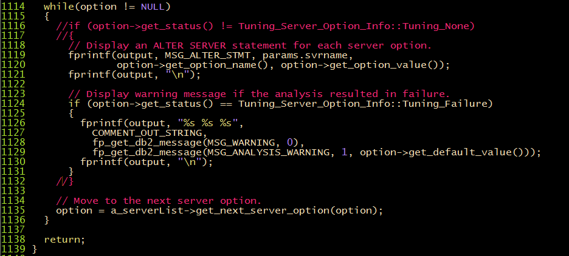
- let db2fedsvrcfg.C print out all the server option as long as not
Tuning_Server_Option_Info::Tuning_Failure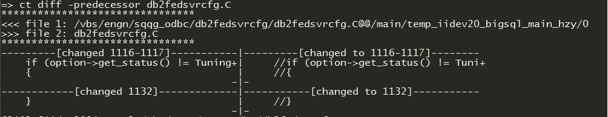Now the test result is:
=> db2fedsvrcfg -s SERVER1 -m /opt/oemclient/odbc60/64/lib/VMmsss24.so -dsn mssql2005csdl1 -u j15user1 -p j15user1 -- This CLP file was created using "db2fedsvrcfg" Version "10.6.0.3". -- Timestamp: 2015/10/28 15:00:30 -- Server Name: SERVER1 -- ODBC Driver Manager: /opt/oemclient/odbc60/64/lib/VMmsss24.so -- DSN Name: mssql2005csdl1 -- Remote Database Name: -- Remote User Name: j15user1 -- Remote Table Names: IITEST[#] -- Remote Data Source Codepage: -- Preparation: YES -- Verbose: NO -- Generating ALTER SERVER statement... -- -------------------------------------------------- -- ALTER SERVER statements for server "SERVER1" -- -------------------------------------------------- ALTER SERVER "SERVER1" OPTIONS (ADD PUSHDOWN 'Y'); ALTER SERVER "SERVER1" OPTIONS (ADD DB2_GROUP_BY 'N'); ALTER SERVER "SERVER1" OPTIONS (ADD DB2_ORDER_BY 'N'); ALTER SERVER "SERVER1" OPTIONS (ADD DB2_COLFUNC 'N'); ALTER SERVER "SERVER1" OPTIONS (ADD DB2_VARCHAR_BLANKPADDED_COMPARISON 'N'); ALTER SERVER "SERVER1" OPTIONS (ADD DB2_CHAR_BLANKPADDED_COMPARISON 'N'); ALTER SERVER "SERVER1" OPTIONS (ADD DB2_COLFUNC_EXPR 'N'); ALTER SERVER "SERVER1" OPTIONS (ADD DB2_FUNCTION_IN_COUNT 'N'); ALTER SERVER "SERVER1" OPTIONS (ADD DB2_COUNT_NON_DISTINCT 'N'); ALTER SERVER "SERVER1" OPTIONS (ADD DB2_MAX_SEL_SIZE '4005'); ALTER SERVER "SERVER1" OPTIONS (ADD DB2_MAX_OB_SIZE '256'); ALTER SERVER "SERVER1" OPTIONS (ADD DB2_MAX_GB_SIZE '256'); ALTER SERVER "SERVER1" OPTIONS (ADD DB2_OUTER_JOINS 'N'); ALTER SERVER "SERVER1" OPTIONS (ADD DB2_NESTED_TAB_EXPR 'N'); ALTER SERVER "SERVER1" OPTIONS (ADD DB2_UPD_SET_DEFAULT 'N'); ALTER SERVER "SERVER1" OPTIONS (ADD DB2_BASIC_PRED_RHS_SCALAR_SQ 'N'); ALTER SERVER "SERVER1" OPTIONS (ADD DB2_UNION_ALL 'N'); ALTER SERVER "SERVER1" OPTIONS (ADD DB2_COLFUNC_DISTINCT 'N'); ALTER SERVER "SERVER1" OPTIONS (ADD DB2_SELECT_DISTINCT 'N'); ALTER SERVER "SERVER1" OPTIONS (ADD DB2_EXISTS_PRED 'N'); The db2fedsvrcfg command completed successfully.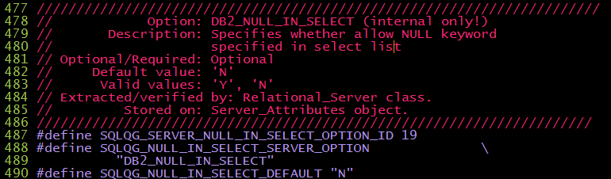
- Add one more server attribute “SQLQG_SERVER_NULL_IN_SELECT” into db2odbct_common.h
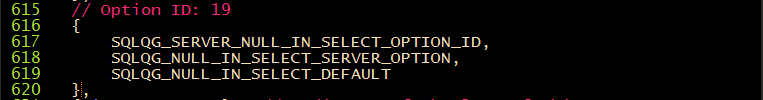
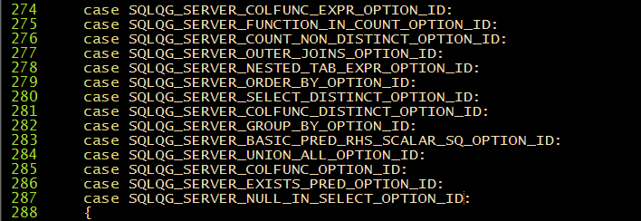
- Add
case SQLQG_SERVER_NULL_IN_SELECT_OPTION_ID:in db2odbct_analyze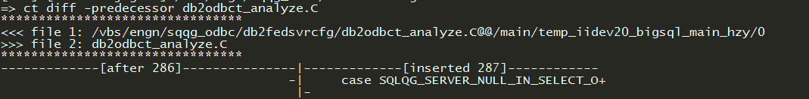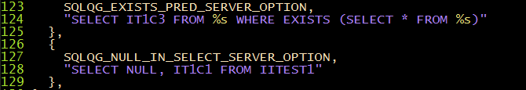
- Add analyze statement query in db2odbct_statement.h
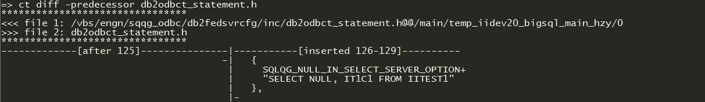Note
Here, instead of using
fprintfstyle statement like previous options in the tool (namely Option ID: 0 - 18), I directly encode the table name into the query.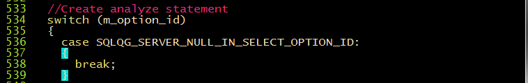
- Add
case SQLQG_SERVER_NULL_IN_DISTINCT_OPTION_IDin “db2odbct_statement.C”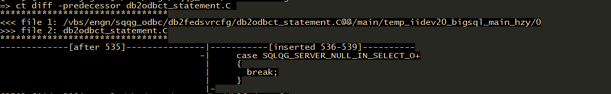Note
Since in the analyze statement already contains hardcode table_name, and thus we don’t need to do anything here (i.e. to replace %s with actual table_name like previous statements in tool)
- checkin “db2odbct_statement.C”, “db2odbct_statement.h”, “db2odbct_analyze.C”, “db2odbct_common.h”, “db2fedsvrcfg.C”
11/10/15:
- Finish adding server attributes (see Zhitong & Xue’s doc INCOMPLETE INVESTIGATION REPORT ON db2fedsvrcfg TOOL)
- 11/12/15:
Based upon 11/12/15 analysis, remove quotation marks around “IITEST1” in db2odbct_common.h:
DOESN’T WORK
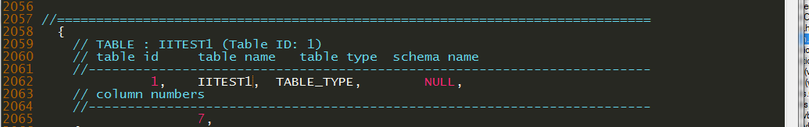Note
Table definition has to fit into
typedef struct Table_Definition. In it,char *table_name- a string. The quotation mark is added somewhere else.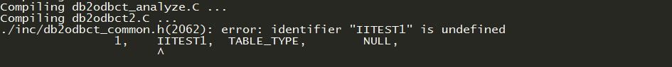Also try to erase quotation marks around
id_quote_strin db2odbct_statement.CDOESN’T WORK
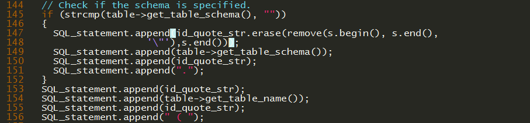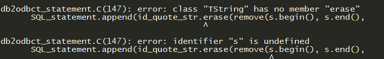FIND HOW QUOTATION MARKS ADDED modified
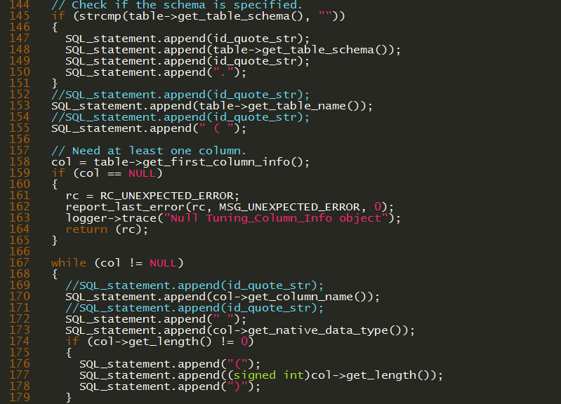db2odbct_statement.C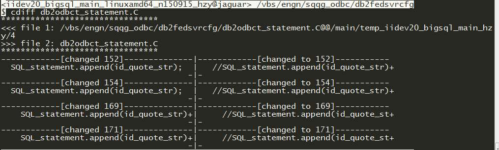
3. test¶
Sanity check:¶
[odbc] has to be the top of odbc.ini
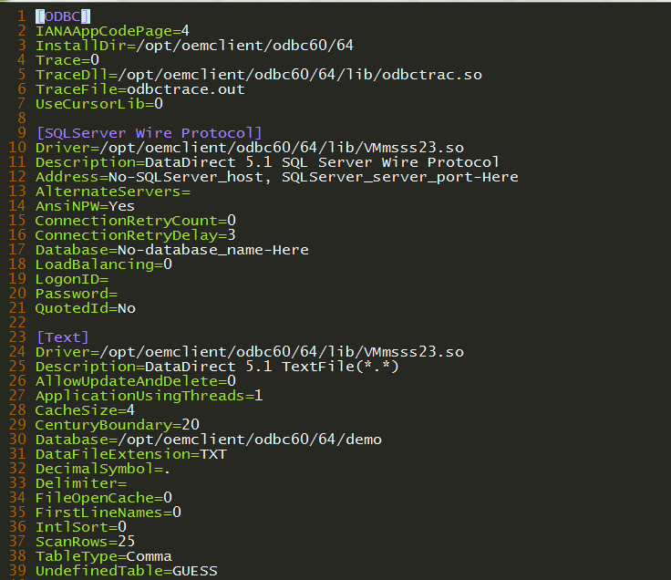make sure the [dsn] Driver is loadable
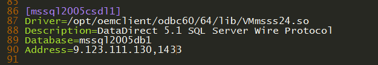if (b) is doing correctly, run
ldd /opt/oemclient/odbc60/64/lib/libodbc.soto verify library is loadable (i.e. no “not found”)verify
LD_LIBRARY_PATHenvironment is properly setup. If you see nothing, probably you’re in bash. You need to use ksh.run
db2fedsvrcfg -s SERVER1 -m /opt/oemclient/odbc60/64/lib/libodbc.so -dsn mssql2005csdl1 -u j15user1 -p j15user1
3.0 test method [mssql2005csdl1]¶
3.0.1 run
db2fedsvrcfg -s SERVER1 -m /opt/oemclient/odbc60/64/lib/libodbc.so -dsn mssql2005csdl1 -u j15user1 -p j15user1:Note
DB2_NULL_EQUALITYandDB2_VARCHAR_NO_TRAILING_BLANKSwill give out warning no matter how default values are set
3.1 test method [hive]¶
Note
9.181.139.171root/hadooprun
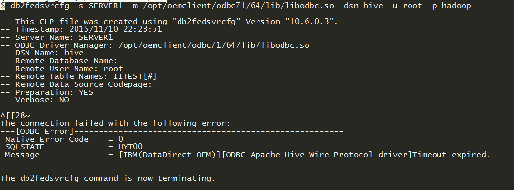db2fedsvrcfg -s SERVER1 -m /opt/oemclient/odbc71/64/lib/libodbc.so -dsn hive -u root -p hadoop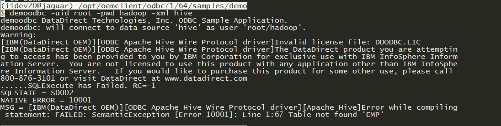UPDATE: 11/11/15
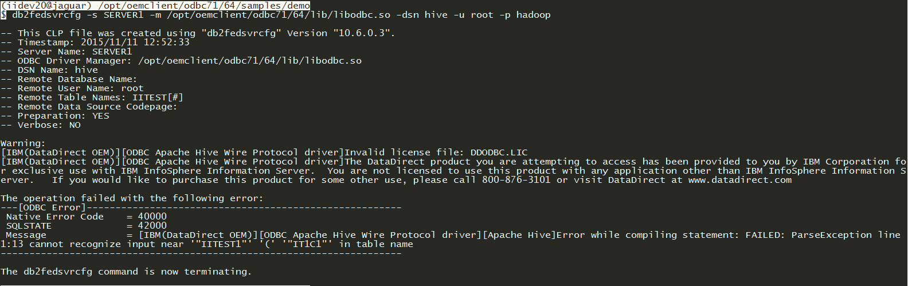reason: hiveserver2 on 9.181.139.171 takes all the memory (access by
top), which cannot take in any other connection.fix: try to reboot the VM on 9.181.139.171
shutdown -r nowthis tells system to reboot NOWif this doesn’t work, try following command:
ps -ef | grep java | moreps -ef | grep java | awk '{print $2}' | xargs kill -9then retry
shutdown -r now
- verify: try either
netstat -apn | grep 10000on 9.181.139.171 or
telnet 9.181.139.171 10000on 9.112.250.80or try
demoodbc -uid root -pwd hadoop -xml hiveon 9.112.250.80UPDATE: 11/12/15
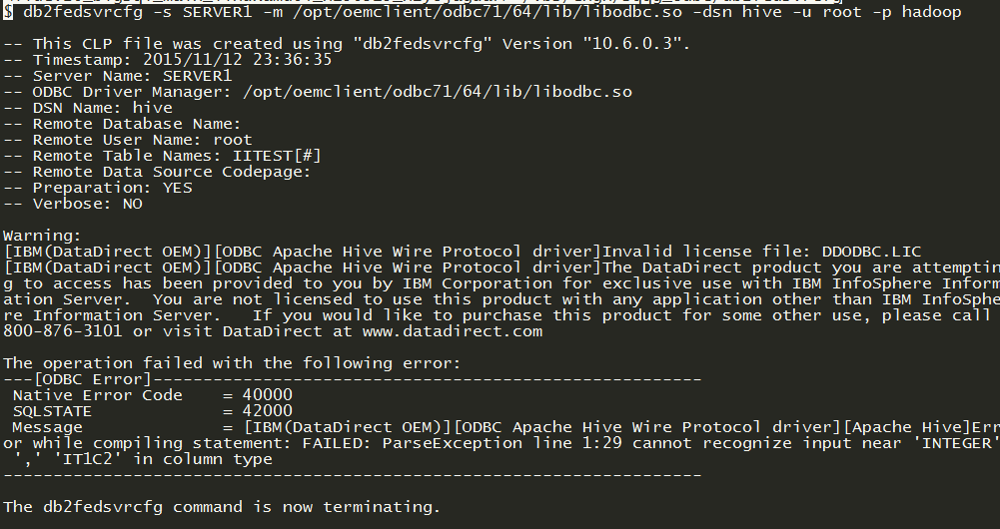Statement generated before the error:
CREATE TABLE IITEST1 ( IT1C1 INTEGER, IT1C2 INTEGER, IT1C3 CHAR(1), IT1C4 CHAR(3), IT1C5 CHAR(10), IT1C6 VARCHAR(10), IT1C7 CHAR(100) )Correct statement that can be created in hive directly:
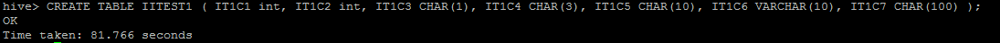CREATE TABLE IITEST1 ( IT1C1 int, IT1C2 int, IT1C3 CHAR(1), IT1C4 CHAR(3), IT1C5 CHAR(10), IT1C6 VARCHAR(10), IT1C7 CHAR(100) );
3.2 test method [Impala]¶
Note
Using impala shell directly:
9.123.111.142cloudera/clouderarunimpala-shelluse 9.112.250.80
run
autohive -ifto config. You need to update[odbc]and[Impala_test1]manually in “odbc.ini”Here is an example from
autohive -ifoutput:[ODBC] IANAAppCodePage=4 InstallDir=/opt/oemclient/odbc71/64 TraceDll= TraceFile=odbctrace.out UseCursorLib=0 [Impala_test1] Driver=/opt/oemclient/odbc71/64/lib/VMimpala00.so Description=DataDirect 7.1 Impala Wire Protocol ArraySize=1024 Database=default DefaultLongDataBuffLen=1024 DefaultOrderByLimit=-1 EnableDescribeParam=0 HostName=9.123.111.142 LoginTimeout=30 LogonID=cloudera MaxVarcharSize=2147483647 Password= PortNumber=21050 RemoveColumnQualifiers=0 ServicePrincipalName= StringDescribeType=-9 TransactionMode=0 UseCurrentSchema=0 Trace=0 TraceDll=/opt/oemclient/odbc71/64/lib/VMtrc00.so TraceFile=odbctrace.out QEWSD=2457260Note
Again, [ODBC] has to stay top of odbc.ini
Restart db through
db2stop force; db2startcompose a clp file to see if the connection to impala works as expected:
connect to testdb; drop wrapper odbc; drop server SERVER1; create wrapper odbc options(MODULE '/home/iidev20/branded_odbc/lib/libodbc.so'); create server "SERVER1" type odbc version 7.1 wrapper odbc authorization "cloudera" password "cloudera" OPTIONS(node 'Impala_test1',dbname 'default',CODEPAGE '1252'); create user mapping for user server "SERVER1" options(REMOTE_AUTHID 'cloudera',REMOTE_PASSWORD 'cloudera'); create nickname nick1 for "SERVER1"."default"."tab1"; create nickname nick2 for "SERVER1"."default"."tab2"; describe table nick1;check output of clp file:
=> db2 -tvf impala.clp connect to testdb Database Connection Information Database server = DB2/LINUXX8664 10.1.5 SQL authorization ID = IIDEV20 Local database alias = TESTDB drop wrapper odbc DB20000I The SQL command completed successfully. drop server SERVER1 DB21034E The command was processed as an SQL statement because it was not a valid Command Line Processor command. During SQL processing it returned: SQL0204N "SERVER1" is an undefined name. SQLSTATE=42704 create wrapper odbc options(MODULE '/home/iidev20/branded_odbc/lib/libodbc.so') DB20000I The SQL command completed successfully. create server "SERVER1" type odbc version 7.1 wrapper odbc authorization "cloudera" password "cloudera" OPTIONS(node 'Impala_test1',dbname 'default',CODEPAGE '1252') DB20000I The SQL command completed successfully. create user mapping for user server "SERVER1" options(REMOTE_AUTHID 'cloudera',REMOTE_PASSWORD 'cloudera') DB20000I The SQL command completed successfully. create nickname nick1 for "SERVER1"."default"."tab1" DB20000I The SQL command completed successfully. create nickname nick2 for "SERVER1"."default"."tab2" DB20000I The SQL command completed successfully. describe table nick1 Data type Column Column name schema Data type name Length Scale Nulls ------------------------------- --------- ------------------- ---------- ----- ------ ID SYSIBM INTEGER 4 0 Yes COL_1 SYSIBM SMALLINT 2 0 Yes COL_2 SYSIBM DOUBLE 8 0 Yes COL_3 SYSIBM TIMESTAMP 10 6 Yes 4 record(s) selected.run
db2fedsvrcfg -s SERVER1 -m /opt/oemclient/odbc71/64/lib/libodbc.so -dsn Impala_test1 -u cloudera -p cloudera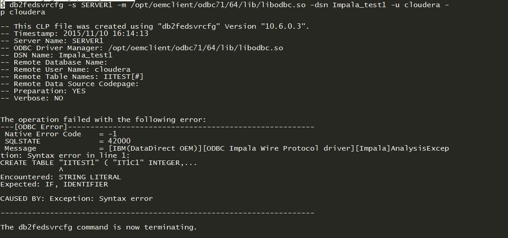UPDATE 11/12/15:
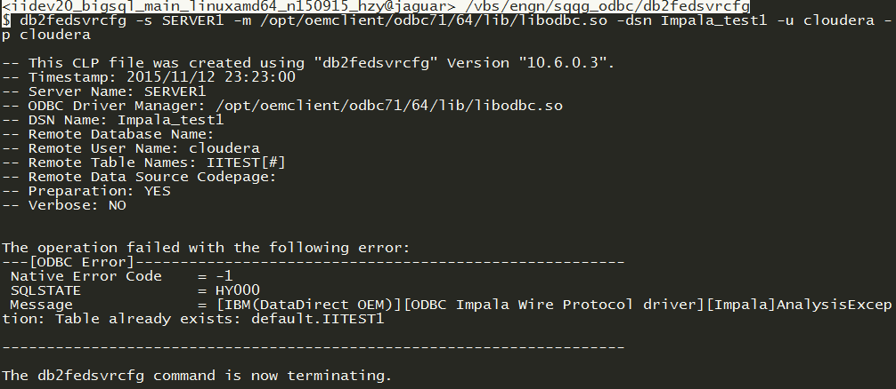UPDATE 11/13/15:
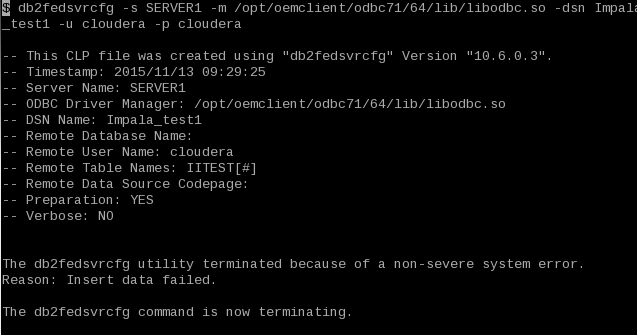
run
db2fedsvrcfg -s SERVER1 -m /opt/oemclient/odbc71/64/lib/libodbc.so -dsn Impala_test1 -u cloudera -p cloudera -noprepinstead.Note
-noprepmeans to skip remote creating table phase. Jump directly to the test query execution. Doing this avoid modifying db2fedsvrcfg tool heavily. In other words, when user deal with Impala, hive data source, they should use ``-noprep`` and create test tables remotely before using the toolUPDATE 11/13/15:
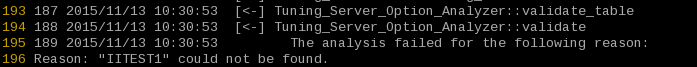Note
The reason for the incorrect analysis result is that
Tuning_Server_Option_Analyzer::validate_tablefailed. Clearly"IITEST1"doesn’t match withIITEST1. In other words, in table validation phase, quotation marks still matter.Todo
Two potential paths to fix:
- Eliminate quotation marks around
IITEST1during table validation phase, and see if analyzer can proceed.- When
-noprepset, bypass table validation phase and directly to execute the test queries.UPDATE 11/22/15:
Detailed analysis of the error message found on UPDATE 11/13/15:
Detailed Error trace analysis:
Tuning_Server_Option_Analyzer::validateThe analysis failed for the following reason: Reason: “IITEST1” could not be found.
This error message is generated in function
describe_tableofdb2odbct_operation.Cwhenrc == RC_NO_DATA_FOUND, which is2. The2also appears in the trace that several lines above saying Return code: 2
Tuning_Statement:: fetchFailure in the fetch of describe_table
This error happens when
fetchfunction ofdb2odbct_statement.Ccalled indescribe_tableofdb2odbct_statement.C, and the return code is not equal toRC_OKDetailed Call stack:
db2odbct_operation.Cdescribe_table
rc = m_statement->describe_table(m_table_info, a_rs_list);
db2odbct_statement.Cdescribe_table
rc = fetch(&rs_list);Note
iitest1 table structure

Perform mssql2005 and impala test using
-noprepat the same time, and compare the trace file:Namely,
mssql:
db2fedsvrcfg -s SERVER1 -m /opt/oemclient/odbc60/64/lib/libodbc.so -dsn mssql2005csdl1 -u j15user1 -p j15user1 -noprepImpala:
db2fedsvrcfg -s SERVER1 -m /opt/oemclient/odbc71/64/lib/libodbc.so -dsn Impala_test1 -u cloudera -p cloudera -noprep
Tuning_Connection::get_remote_attributesis executed and found in mssql trace but not in impalaInvestigation:
get_remote_attributesis found indb2odbct_connection.C. Here is the header info about this function:Name = Tuning_Connection::get_remote_attributes ***********************************************************************/ /** * \brief Get ODBC information by calling SQLGetInfo. * * In this function, the following are got from the ODBC driver or * data source: * - SQL_ODBC_VER * - SQL_DRIVER_ODBC_VER * - SQL_DRIVER_NAME * - SQL_IDENTIFIER_QUOTE_CHAR * If it fails to get the SQL_IDENTIFIER_QUOTE_CHAR value, the double * quote(") is used. The SQL_IDENTIFIER_QUOTE_CHAR will be used when * creating a remote SQL statement. The others will be used just as * debug info. * * \note We don't case of any ODBC errors returned from SQLGetInfo, * because they are not a fatal error. *Update: 11/24/15
Known issue:
- code page issue.
Tuning_Utilities::get_codepageget called, andSQL_CP_UNKNOWNis returned, which cause Failed in getting codepage error message.fetchfunction returnSQL_NO_DATA_FOUND(see code analysis)Update: 12/01/15
Update: 12/02/15